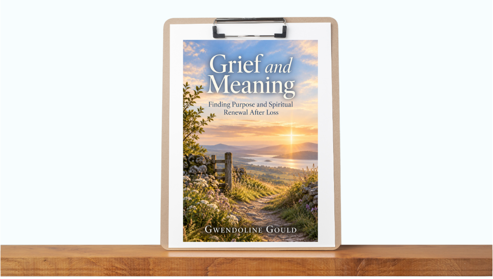

Grief And Meaning Finding Purpose And Spiritual Renewal After L
Product profile · Marketplace data 2026-10-09 · Sales-page research 2026-10-09 · Categories: Uncategorized

Marketplace record
| Product type | Member area and video courses |
|---|---|
| Price | $21.58 (Single payment) |
| Affiliate commission | 50% |
| Refund window | Per the vendor's sales page — check the official page before buying |
| Vendor | professionalconfidence (listed since 2026-09-23) |
| Marketplace stats* | Cart conversion — · cancel rate — · affiliate earnings/sale $10.79 |
* Vendor-side marketplace statistics reported by Digistore24; they depend on traffic quality and are not a forecast.
From the vendor's sales page
Page title: Grief And Meaning Finding Purpose And Spiritual Renewal After Loss
Meta description: Find comfort, meaning, and renewed purpose after loss with gentle guidance to help you navigate grief, reflect, heal, and move forward with hope.
Headline
You've felt like there is a gap. Am'I right?? Even after trying ALL of the things??
You've felt like there is a gap. Am'I right?? Even after trying ALL of the things??
Finally, ready for a change?? Get the Grief And Meaning Finding Purpose And Spiritual Renewal After Loss!
Section headlines
- Learn strategies that are proven.
- Find the productivity you never knew was possible.
- Get organized once and for all!
- Tips & Tricks for Lasting Results!
- Find everything you need
- Step-by-Step Tips
- This is for you IF you...
- About Me, I'm Gwen
- How To Get Started
- It’s Almost Yours!
Prices mentioned on the page: £37
Guarantee language found: “60” — always confirm the current terms on the official page before relying on it.
CTA buttons: “Order Now - GBP 0”
Opening copy
We all struggled with the same things, so we discovered all of the shortcuts. We've found them, and we can't wait to help you!
You've felt like there is a gap. Am'I right?? Even after trying ALL of the things??
Learn strategies that are proven. It's not another "course" or another thing for your to-do list, it's doable strategies!
Research method: raw HTML fetch · 1458 words on page · quality: rich · researched 2026-10-09. Full research file (MD) ↗
Where to check it out
Read the vendor's full sales page (current price, guarantee terms and bonuses are listed there):
View official sales page
That link is an affiliate link — if you buy through it we earn a commission from the vendor at no extra cost to you.